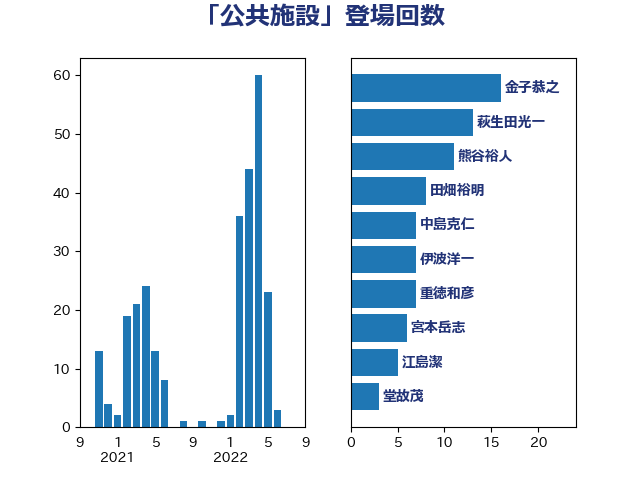

単語「公共施設」

| 金子恭之 | 自由民主党 | 16 回 |
| 萩生田光一 | 自由民主党 | 13 回 |
| 熊谷裕人 | 立憲民主党 | 11 回 |
| 田畑裕明 | 自由民主党 | 8 回 |
| 中島克仁 | 立憲民主党 | 7 回 |
| 伊波洋一 | 無所属 | 7 回 |
| 重徳和彦 | 立憲民主党 | 7 回 |
| 宮本岳志 | 日本共産党 | 6 回 |
| 江島潔 | 自由民主党 | 5 回 |
| 堂故茂 | 自由民主党 | 3 回 |
| 岩渕友 | 日本共産党 | 3 回 |
| 梅村聡 | 日本維新の会 | 3 回 |
| 河野義博 | 公明党 | 3 回 |
| 田村貴昭 | 日本共産党 | 3 回 |
| 竹谷とし子 | 公明党 | 3 回 |
| 塩村あやか | 立憲民主党 | 2 回 |
| 室井邦彦 | 日本維新の会 | 2 回 |
| 小宮山泰子 | 立憲民主党 | 2 回 |
| 小山展弘 | 立憲民主党 | 2 回 |
| 岸田文雄 | 自由民主党 | 2 回 |
| 岸真紀子 | 立憲民主党 | 2 回 |
| 斎藤アレックス | 国民民主党 | 2 回 |
| 斎藤洋明 | 自由民主党 | 2 回 |
| 玉木雄一郎 | 国民民主党 | 2 回 |
| 羽田次郎 | 立憲民主党 | 2 回 |
| 藤原崇 | 自由民主党 | 2 回 |
| 藤木眞也 | 自由民主党 | 2 回 |
| 西岡秀子 | 国民民主党 | 2 回 |
| 赤羽一嘉 | 公明党 | 2 回 |
| 中司宏 | 日本維新の会 | 1 回 |
| 佐藤英道 | 公明党 | 1 回 |
| 倉林明子 | 日本共産党 | 1 回 |
| 加藤勝信 | 自由民主党 | 1 回 |
| 加藤鮎子 | 自由民主党 | 1 回 |
| 吉田忠智 | 立憲民主党 | 1 回 |
| 吉良よし子 | 日本共産党 | 1 回 |
| 坂本哲志 | 自由民主党 | 1 回 |
| 大口善徳 | 公明党 | 1 回 |
| 大島敦 | 立憲民主党 | 1 回 |
| 守島正 | 日本維新の会 | 1 回 |
| 宮崎雅夫 | 自由民主党 | 1 回 |
| 宮本周司 | 自由民主党 | 1 回 |
| 寺田静 | 無所属 | 1 回 |
| 小泉進次郎 | 自由民主党 | 1 回 |
| 山崎誠 | 立憲民主党 | 1 回 |
| 山本剛正 | 日本維新の会 | 1 回 |
| 山谷えり子 | 自由民主党 | 1 回 |
| 岡本三成 | 公明党 | 1 回 |
| 斉藤鉄夫 | 公明党 | 1 回 |
| 新妻秀規 | 公明党 | 1 回 |
| 朝日健太郎 | 自由民主党 | 1 回 |
| 本村伸子 | 日本共産党 | 1 回 |
| 本田太郎 | 自由民主党 | 1 回 |
| 森山浩行 | 立憲民主党 | 1 回 |
| 武田良太 | 自由民主党 | 1 回 |
| 武部新 | 自由民主党 | 1 回 |
| 津島淳 | 自由民主党 | 1 回 |
| 清水貴之 | 日本維新の会 | 1 回 |
| 渡辺孝一 | 自由民主党 | 1 回 |
| 源馬謙太郎 | 立憲民主党 | 1 回 |
| 田名部匡代 | 立憲民主党 | 1 回 |
| 田島麻衣子 | 立憲民主党 | 1 回 |
| 田嶋要 | 立憲民主党 | 1 回 |
| 石井啓一 | 公明党 | 1 回 |
| 石垣のりこ | 立憲民主党 | 1 回 |
| 神津たけし | 立憲民主党 | 1 回 |
| 福島みずほ | 社会民主党 | 1 回 |
| 秋本真利 | 自由民主党 | 1 回 |
| 笹川博義 | 自由民主党 | 1 回 |
| 美延映夫 | 日本維新の会 | 1 回 |
| 舩後靖彦 | れいわ新選組 | 1 回 |
| 藤丸敏 | 自由民主党 | 1 回 |
| 西村康稔 | 自由民主党 | 1 回 |
| 谷合正明 | 公明党 | 1 回 |
| 野上浩太郎 | 自由民主党 | 1 回 |
| 鎌田さゆり | 立憲民主党 | 1 回 |
| 阿部知子 | 立憲民主党 | 1 回 |
| 高橋千鶴子 | 日本共産党 | 1 回 |